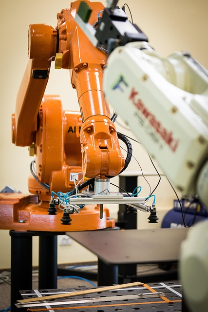
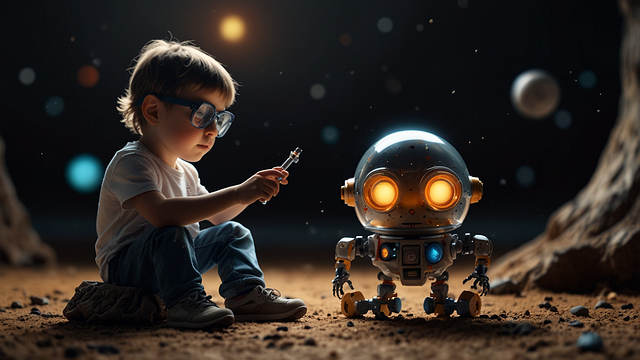
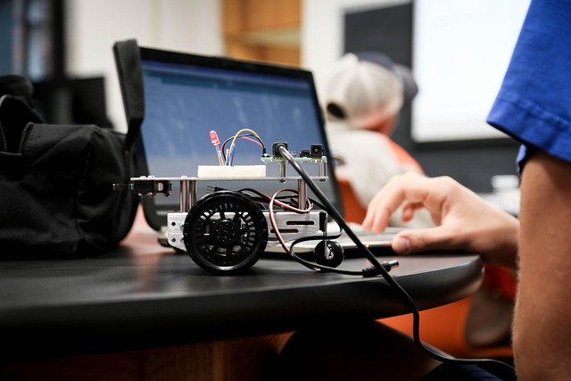
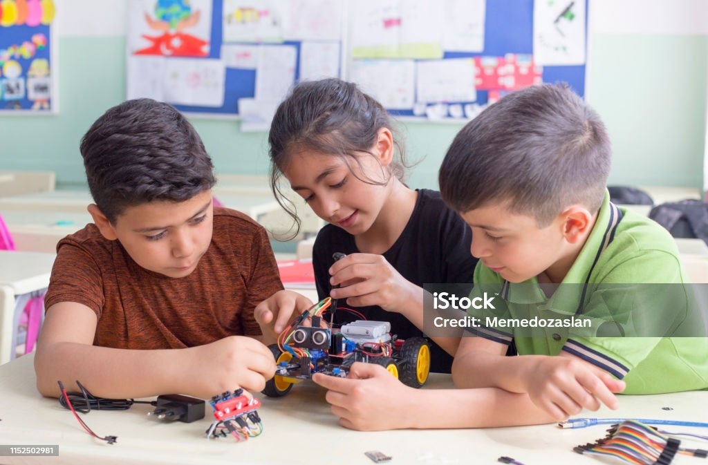

La robótica educativa utiliza robots como herramientas didácticas que ayudan a los estudiantes a aprender programación, ingeniería y lógica matemática de manera práctica.

Beneficios
Fomenta la creatividad y el pensamiento crítico
Fortalece habilidades de resolución de problemas
Promueve el trabajo en equipo y la colaboración
Prepara a los estudiantes para profesiones del futuro

Componentes de un Robot
Sensores: Detectan el entorno
Actuadores: Permiten el movimiento
Controlador: Ejecuta instrucciones
Estructura: Cuerpo del robot

Actividades Sugeridas
Diseñar un robot que siga una línea
Simular un semáforo con luces LED
Crear un robot que evite obstáculos
Programar una coreografía con movimientos

Video Educativo
A continuación, un video introductorio a la robótica educativa: